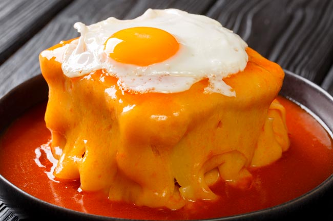

Francesezinha

Descrição
Aprenda a fazer um verdadeiro símbolo da gastronomia do Porto: a francesinha. Em pouco mais de 30 minutos consiga uma deliciosa francesinha.
Ingredientes
- 6 fatias de pão de forma
- 2 unidades de filé bovino
- 8 fatias de queijo
- 2 fatias de presunto
- 2 unidades de salsicha
- 2 unidades de linguiça fresca
- 2 unidades de ovo frito (opcional)
- 2 colheres de sopa de azeite de oliva ou óleo de girassol
- molho de francesinha (receita abaixo)
- pimenta do reino
- sal
Confeção
- Para fazer francesinha caseira comece por preparar o molho de francesinha .
- Enquanto cozinha o molho, corte as salsichas e linguiças em metades, no sentido horizontal, e depois ao meio, no sentido vertical. Tempere as linguiças e os filés com sal e pimenta e grelhe na chapa ou frite numa frigideira com óleo.
- TMonte a Francesinha à moda do Porto: Torre ligeiramente as fatias de pão e coloque duas fatias em dois pratos. Disponha sobre elas uma fatia de presunto, o bife, outra fatia de pão, as salsichas e as linguiças.
- Tampe com a última fatia de pão e disponha as fatias de queijo, cobrindo a francesinha. Leve a assar no forno preaquecido 200°C até o queijo derreter.
- Finalmente sirva a Francesinha à moda do Porto ainda quente, regada com o molho. Se quiser acrescente ainda no topo um ovo frito e acompanhe com batata frita. Diga o que achou desta receita, e bom apetite!
Voltar ao topo
Voltar há Pagina Inicial